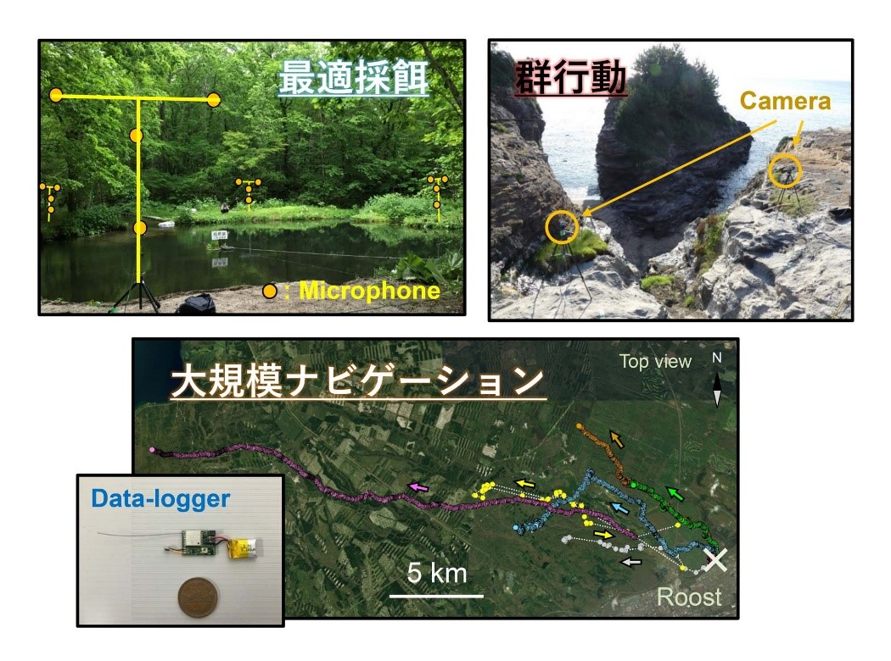
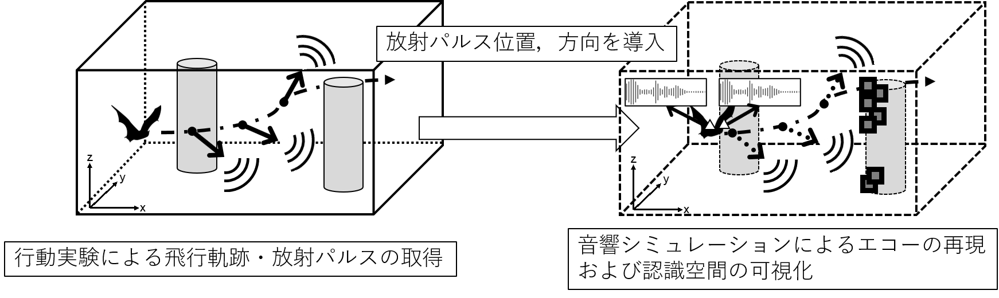
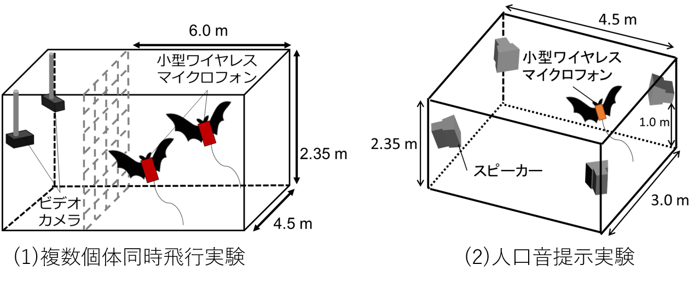
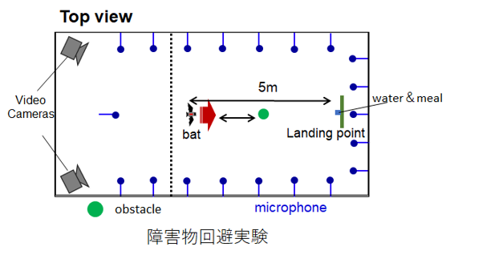
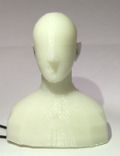
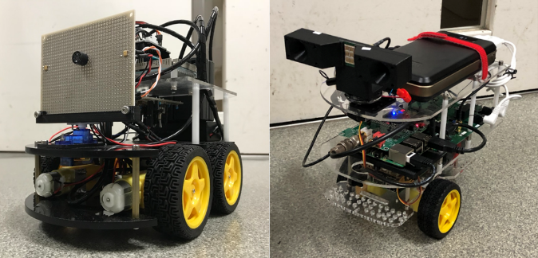
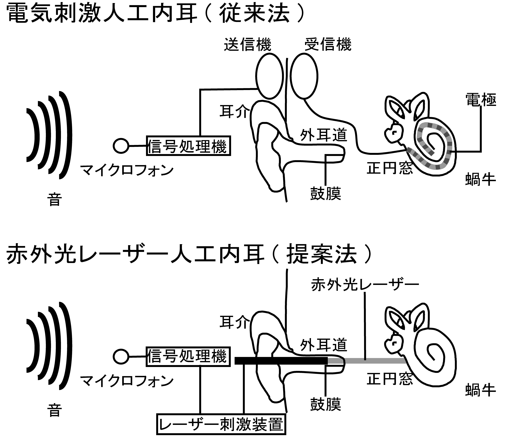
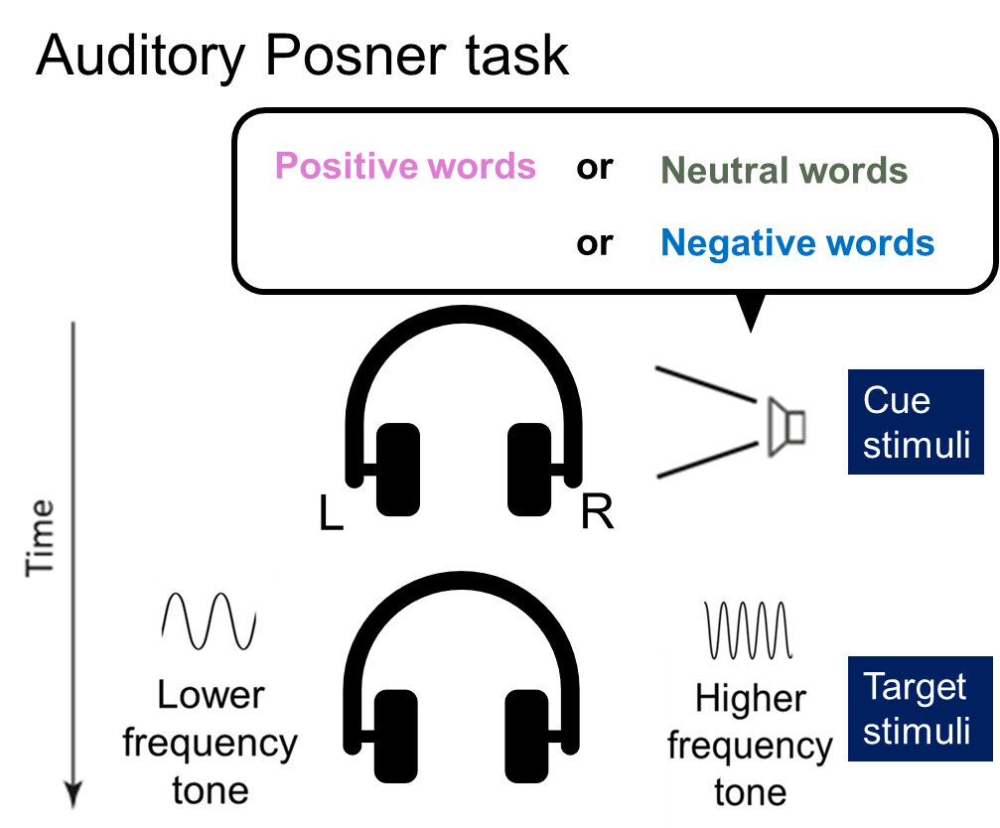
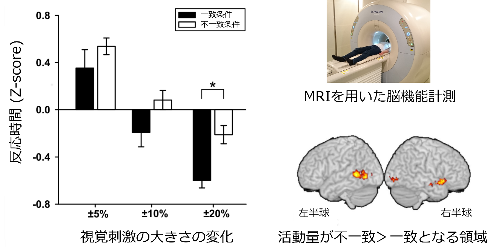

研究紹介Research
Last updated May 8, 2021.
コウモリ班 Bat Team
ヒト・ネズミ班 Human / Gerbil Team
神経行動コラボ班 Neuroethology Collaboration Team
コウモリ班 Bat Team
野外班 －野外におけるコウモリの音響ナビゲーション戦略を解明しよう！－
自然環境下である野外では，実験室内では決して見ることができないコウモリのダイナミックな飛行と超音波利用を垣間見ることができます． 野生のコウモリが生きるために行う賢い戦略に学び，その際の音響ナビゲーションのアルゴリズムを解明するために，野外では主に三つの実験を行っています． 最適採餌に関する研究では，獲物捕食効率を最適にしようと振舞うという理論（最適採餌理論）の視点から，餌場における効率的な飛行ルート選択と音響センシングについて，またコウモリ同士の協調的な振る舞いについても研究を行っています． 群行動に関する研究では，大群となって飛行するコウモリが限られた空間をどのようにシェアしながらぶつからずに採餌を行っているのか，そのための超音波利用と飛行制御のメカニズムに迫ります． 大規模ナビゲーションに関する研究では，コウモリが大規模空間にて何を手がかりにして移動し，そしてどのように餌場を探すのか，バイオロギングと呼ばれる手法を用いて調べています． これらの野外実験で得られた仮説を，数理モデルを用いて検証し，その合理性の評価も行うことで，効果的なコウモリ・アルゴリズムとして工学分野へ応用することを目指しています．
室内班
私たちの研究グループでは，観測室内でのコウモリの行動の計測を通して，コウモリのセンシング戦略の解明を目指しています．
－コウモリが“視ている“世界の可視化によるセンシング戦略の解明－
コウモリは，超音波パルスを発し、周囲からの反響音（エコー）を両耳で聴取，そして脳内で処理することで空間情報を取得しています（エコーロケーション）． コウモリの空間把握や採餌行動はエコーの情報を基に行われ，飛行方向やパルス放射タイミングや放射方向にはコウモリのセンシング戦略の考えが乗せられています． 今までの研究では，コウモリの飛行中に両耳で聴取するエコーを計測できないために，エコーを含めたコウモリのセンシング戦略を検討することができていません． 私たちの研究チームでは，室内の観測室（実空間）での行動計測と音響シミュレーション（シミュレーション空間）でのエコー復元を組み合わせることでコウモリのエコーを含めたセンシング戦略の解明を目指しています． コウモリの空間認識戦略が発揮される，様々な障害物を配置した空間を観測室（実空間）に構築し，コウモリの飛行経路，パルス放射タイミングや放射方向を計測した後，音響シミュレーション空間にその情報を持ち込み，各パルス放射時でのエコーを復元します（図参照）．音響シミュレーションにより復元されたエコーからコウモリが超音波を使用しどのような世界を”視ている”のかを可視化し，エコーと飛行，放射パルスの関係を含めた空間認識戦略の検討を行っています．

－コウモリの集団飛行時のセンシング戦略の解明－
コウモリは超音波を発し，その反響音（エコー）を聞くことにより，周囲環境を把握して飛行しています． コウモリが発する超音波は種ごとに似通っているにもかかわらず，洞窟などの狭くて暗い空間においても衝突することなく飛行を実現させています． たくさんのコウモリが飛行する環境（＝音響的な混信環境）から，どのようにして自身に必要な音のみを聞き分けているのか… 私たちのグループはコウモリが持つ優れた超音波信号の分離・聴取能力に着目し，時間長や周波数などの音響面から検討をしています． コウモリの混信回避能力を検討するための行動実験として，2種類の観点から研究を進めています． （１）観測室内で複数のコウモリを同時に飛行させ，個々のコウモリが発する超音波を音響面から検討を行う． （２）観測室内にスピーカを設置し，コウモリの超音波に似た音の再生環境下で飛行させ，コウモリが発する超音波の音響面の検討を行う． コウモリの頭部には自作の小型ワイヤレスマイクロフォンを搭載し，コウモリが実際に放射，また聴取している音をリアルタイムで録音できるような実験系を構築し，検討を進めています． これらの実験を並行して行うことで，混信に強い信号・ 受信技術等，コウモリの持つ優れた混信回避能力を解明し，通信やロボットの群制御の面等，工学分野での新たな知見を得ることを目指しています．

－コウモリの耳の動きが空間認識に与える影響の解明－
自ら発した超音波の反響音（エコー）により周囲の環境を把握しているコウモリですが，彼らが反響音をどのように利用しているのかはまだまだわかっていません． 私たちはコウモリが反響音を取得しているときの耳の動きに注目し，コウモリが音響情報と耳介運動をどのように組み合わせて周辺環境の把握にアドバンテージを得ているのかを研究しています．
－コウモリの障害物回避戦略の解明－
コウモリは口や鼻から超音波パルスを放射して，標的からのエコーを聴取することによって，標的の距離や方向などの情報を取得することにより，障害物の回避や採餌の際に非常に効率的な飛翔を行っています． そこでコウモリが障害物を回避する際の飛行制御を計測し，さらにそのデータを数理モデル化することで，コウモリのナビゲーション戦略を評価し分析しています． これにより，数理学的な観点からコウモリの飛翔メカニズムの解明し，新しい工学技術への知見を提供したいと考えています．

ヒューマンエコーロケーション班 －“音で世界を見る”に迫る－
コウモリのエコーロケーションに関する研究は進んでおり、目的や状況に応じて、柔軟に超音波の音響特性を変化させていることがわかってきています。 一部の視覚障害者も、コウモリのように超音波ではないものの、自身の発する舌打ち音を用いたエコーロケーションを行うことで周囲の環境を把握しており、エコーを聴収した際に視覚野の一部が賦活することが明らかになっています。 しかし、コウモリや一部の視覚障害者がエコーロケーションを用いてどのような世界を“音で見ている”のかについて、未だ謎が多くあります。 そこで、“音で世界を見る”感覚知覚を理解するために、ヒトを対象に研究を行っています。 私たちのグループはヒトの頭の形状を模擬したMiniature dummy head（MDH）を用いて、立体音響空間情報を保持したエコーを計測し、このエコーをヒトに提示する心理実験から材質弁別が可能かなどの検討がされてきました。 近年、従来の実測計測に加えて、エコーロケーションの手掛かりとなるエコーをより定量的に検討すべく、音の伝搬が可視化可能な音響シミュレーションを導入してきました。 現在は、MDHをシミュレーション内に構築し、ヒトはエコーから形状弁別が可能か、上下左右の方向定位や複数個の音源定位が可能なのかについて、エコーの音響特徴量の検討やヒトにエコーを提示する心理実験より研究していきます。 

Miniature dummy head
ロボット班 －コウモリのエコーロケーションをロボットに応用！－
・コウモリロボット

コウモリロボット
コウモリロボット
コウモリは“鼻または口”（1つの送信器）と“両耳”（2つの受信器）といった非常にシンプルな超音波センシングシステムと巧みなセンシングテクニックを用いることで，周囲空間を把握し，地形環境にも左右されずに柔軟で優雅な飛行を実現させています[1]． 私たちの研究チームでは，これまでのコウモリのエコーロケーション行動の実験で得た結果や発見から，彼らの超音波センシング運用を応用した“コウモリロボット”の開発に取り組んでいます． コウモリが放射する超音波構造を模擬できる高性能なセンサや，リアルタイムでの高速信号処理システム，また近年注目されている機械学習など，様々な新しい知識や技術を学び，ロボットに実装していきます． そして，“コウモリ独自のセンシングテクニックやアイデア”を搭載すると，どのような結果や効果が得られるのか？コウモリロボットを用いた評価・検証実験を通して，これまで発見できなかった彼らの巧みなセンシング戦略の真髄に迫ります[2]． コウモリのエコーロケーション行動を工学的に評価することができれば，少ないセンサ(1送信2受信器)で高精度な空間把握を実現できる新たなソナー技術の発展に繋がり，車の自動運転や自律飛行ドローンなどのセンシング技術に貢献できると考えています． コウモリの偉大さの発見と工学分野への応用を目指し，日々新たなロボットの開発・実験が推し進められています．(株式会社村田製作所，広島大学理学部と共同研究)
[1] Hase, K., "Bats enhance their call identities to solve the cocktail party problem." Communications Biology 1, 39, 2018.
[2] Yamada et al., "Ultrasound navigation based on minimal designed vehicle inspired by bio-sonar strategy of bats." Advance Robotics, in press.
・コウモリの行動を模擬したロボットの実験

コウモリ模倣センシングアルゴリズムの搭載
コウモリは障害物回避や混信回避など，環境やタスクに応じて独自のセンシング戦略を行っています． 私たちの研究チームでは，様々なコウモリ特有のセンシングテクニックやアイデアをロボットに搭載することで，その行動の有用性を評価しています． その結果，障害物との衝突回避や複数台での走行など，複雑な環境下におけるロバストなナビゲーションを実現しました． コウモリの超音波によるセンシング運用は，既存の工学ソナーの発想にはない彼ら独自のアイデアであり，工学的に検証を行うことで，新たなソナー技術に応用できると考えています．
ヒト・ネズミ班 Human / Gerbil Team
感覚統合班 －視覚, 聴覚統合現象からのアプローチ－
錯覚現象には視覚と聴覚が統合されておこる現象があります． その一つに光が1回点滅し，同時に音が2回提示された場合，光が2回に知覚されるダブルフラッシュ現象が報告されています． これは聴覚情報による視覚情報の誘発現象であり，脳で視聴覚統合が起きる時に聴覚情報が視覚情報より時間分解能が優れているため，狭い時間幅を知覚することができると考えられています． ヒトを対象とした実験では明確に1回，曖昧，明確に2回と判断された3種類の聴覚刺激（トーンバースト）と明確に1回，曖昧，明確に2回と判断された3種類の視覚刺激（白色LED）の組み合わせ刺激を用いました． その際、時間分解能の優劣に関わらず、聴覚情報による視覚情報の誘発現象が生じるかどうかを確認することを目的とします． 今後の展望として，今回は時間分解能の優劣のため生じる錯覚現象と空間分解能の優劣のため生じる錯覚現象を比較し，共に錯覚が生じやすいヒト，一方の現象でのみ錯覚が生じやすいヒト，共に錯覚が生じにくいヒトの間で特徴が見られないかをMRIを用いて実験していこうと考えています． また，錯覚が生じる詳しい神経メカニズムを明らかにするために齧歯類であるスナネズミを対象とした研究も行っています． 具体的には，ヒトで生じる錯覚がスナネズミにおいても起きるかを調べ，錯覚が起きた時と起きなかった時の神経活動記録を実施していきます．
神経生理班 －遺伝子から神経メカニズムを紐解く－
私たちが音や光、においといった外部からの刺激を感じ取るためには、たくさんの遺伝子やたんぱく質がかかわっています。 私たちの研究チームでは、医生命システム学科と共同研究を行い、ある特定の遺伝子を欠損したマウスの行動や神経活動を調べることで、その遺伝子の役割や行動の神経メカニズムを解明することが目標です。 ある遺伝子を欠損させたマウスに音刺激を呈示したところ、遺伝子を欠損させていない野生型のマウスと比べて聴覚感度が低下していることが分かってきました。 具体的には、遺伝子欠損マウスの聴覚刺激や視覚刺激に対する脳活動を記録し、野生型と比較することで特定の遺伝子の機能を調べています。 また、目的の遺伝子から作られるタンパク質がどの部分に存在しているのか、神経活動がどの脳領域で起こったのかを詳しく調べるために、脳切片を作成し、目的のタンパク質が存在する領域・脳活動が起こった領域を染色することで、疾患に関わる神経メカニズムを調査しています。
音声コミュニケーション班
他者の感情を理解し、共有する共感性は、社会的な絆を形成するために必要不可欠です。 私達の研究チームでは、ヒトをはじめとした多くの動物は音声を用いてコミュニケーションを行っていることに注目し、音声の観点から絆形成のメカニズムを解明することを目標としています。
－ヒトと小動物の音声コミュニケーション－
現在、動物と触れ合うことで生まれる「癒し」の効果を活かしたアニマルセラピーが注目を集めています。 アニマルセラピーにはアニマルコンパニオンとして人気の高い大型の哺乳動物(イヌ、ネコ等)を用いることが多いですが、大型の哺乳動物を飼育するには、膨大な費用と時間、体力を必要とします。 そこで、私達の班では飼育が簡単な小動物をアニマルコンパニオンにすることを最終目標としています。
イヌやネコなどの大型の哺乳動物は、社会的シグナル(視線、パラ言語音声など)とその意味を理解する認知的プロセスがヒトと類似しています。 しかし、多くの動物の社会的シグナルに対する認知的インタラクションはヒトと異なるため、ヒトと共感的コミュニケーションを行うことは困難です。 ヒトや小動物の感情音声からお互いが共有できる音響パラメータを確立し、音声変換を行うことにより共感的コミュニケーションを実現できると考えています。
－スナネズミの母子間インタラクション－
スナネズミの成獣は様々な超音波音声を用いてコミュニケーションを行っていることが報告されています。 しかし、スナネズミの幼獣では、成獣のように多くのコミュニケーション音声を用いているわけではなく、音声のレパートリーは成長とともに変化します。 幼獣の音声の中で、もっとも有名な音声の一つにIsolation callという音声があります。 Isolation callは、幼獣が巣から逃げ出し、体温が低下した際に母ネズミに助けを求める音声で、この音声は、母ネズミに幼獣を口で加えて巣に戻す母性行動(Retrieve behavior)を誘発させます。 私達の研究チームでは、スナネズミのIsolation callの発達による変化と母子関係の変化を検討し、音声による母子間インタラクションのメカニズムを解明することを目標としています。
レーザー人工内耳班 －赤外光レーザーを用いた非侵襲人工内耳の開発－
現在、日本国内の高度難聴者は約36万人いると言われています。 高度難聴者の聴覚再建方法として人工内耳の装用が挙げられますが、人工内耳の装用は電極を蝸牛内に挿入する侵襲性の高い外科手術を必要とします。 そのため、多くの難聴者が人工内耳を気軽に装用できないことが問題となっています。 近年、赤外光を神経に照射することで活動電位が誘発されることが報告され、電気刺激に代わる新たな刺激法として注目を集めています。 電気刺激で神経を刺激する際には、電極を組織に接触させる必要がありますが、赤外光レーザー刺激は刺激用プローブである光ファイバーを組織に接触させることなく神経を刺激できます。 私達の班では、赤外光レーザー刺激の非接触性を人工内耳に応用することで、イヤホンのように気軽に装用可能な人工内耳の開発を目指しています。 スナネズミを対象とした研究で、赤外光レーザーの刺激パラメーターを調節することで、音知覚を制御できる可能性を示しました。 また、ヒトを対象とした心理実験により、赤外光レーザー人工内耳により少なくとも部分的に音声知覚を再現できることも分かりました。 今後もレーザー人工内耳の実用化に向けた研究を実施したいと考えています。

高次認知班
高次認知班は，選択的注意や意思決定などの認知機能に着目し，ヒトを対象とした様々な観点からそのメカニズムの解明を目指しています．
－過去の報酬が意思決定に与える無意識的な影響－
過去の選択と経験によって形成される意思決定は，社会の中で効率よく生存するための重要な行動戦略です． 最近の研究では，報酬によって無意識的に意思決定が調節される(バイアス)という報告があります． では，そのようなバイアスは意思決定プロセスをどのように調節しているのでしょうか． 現在私たちは過去の報酬によるバイアスを定量化するために，数理モデルを駆使して行動データの解析を行っています． 将来的には過去の報酬によるバイアスの神経基盤を解明するために，脳波(EEG)などの脳機能計測技術を用いて実験を行おうと考えています． これらの報酬と行動の関係性を理解することは，意思決定，行動制御の神経基盤の解明に役立つことが期待されています．
－言葉の意味に含まれる感情が注意に関与する－
私たちヒトは様々な手段を用いて感情を共有しています． 特に言語は，自分の感情や意図を伝えるための重要な手段の一つです． しかし，私たちは一体どのようにして，相手が発する言葉に注意を向け，相手の感情や意図を読みとり，その読みとった情報に対して自分の言葉を相手に伝えるのでしょうか． そこで私たちの研究チームでは，認知神経科学の手法を社会的側面に応用した研究を行っています． 具体的には，異なる感情情報を有する聴覚言語刺激に対して，どのくらい注意を向けているのかを定量する実験を行っています， 更に，言葉に対する注意は，母国語と第二言語でどの程度異なるのかを検討しています． 将来的には，fMRIを使うことで感情的な言葉と選択的注意を処理する脳機能について検討することを目指します． コミュニケーション内におけるお互いの言葉の認知メカニズムの解明により，詳細に他人と感情を共有することができるような仕組みの開発などへの応用が考えられます．

言葉に対する注意を定量する聴覚ポズナータスク
言葉に対する注意を定量する聴覚ポズナータスク
音象徴班
ある音韻や音節のような短い音声が特定の印象(大きさや形など)を想起させる現象を音象徴と言います (例えば「ボ」という音声と「ピ」という音声のそれぞれが大きさを表していると考えたとき、「ボ」より「ピ」の方が小さいように感じないでしょうか？)． このような音声と音声によって喚起させる印象との対応関係は，年齢や言葉や文化の違う多くの人々に共通して存在すると考えられています． 私たちは音象徴という現象が起きる仕組みや，音象徴と言語音声の学習・発達の関係について認知心理学的な側面から研究しています．
－音と意味の対応関係を支える神経ネットワークの解明－
どのように音韻や音節のような単語未満の要素から大きさのような意味を見出すのか． そのメカニズムに迫るために，私たちは行動実験を行い，反応時間に基づいた音象徴の影響を検討したり，functional MRIを用いた脳機能計測から音象徴に関与する大脳皮質の神経ネットワークの検討を行っています[1]．

行動実験の結果(左)，実験装置(右上)，および脳機能計測の結果(右下)
行動実験の結果(左)，実験装置(右上)，および脳機能計測の結果(右下)
視覚刺激の大きさを判断する際に音声がもつ音象徴と視覚刺激の大小が一致したときに反応時間が相対的に早く，不一致の時に相対的に遅くなることが示されました． 「ボ」や「ピ」といった辞書に載っていない無意味な音声を聞くことで視覚刺激の大きさの判断に影響がでるということは，音声自体が大きさの概念を想起させているのではないかと考えます． また，提示される視覚刺激の大小の変化が小さいとき(5%, 10%)より比較的大きな変化の時(15 %)にその影響が確かめられました． このことから，視覚判断のあいまいさを音象徴が変化させるというよりは，明確な視覚的な大きさの違いがあるときに，視覚的な大きさと音象徴の大きさの印象が干渉することが考えられます．
音象徴により反応時間の差が見られた15%の違いがあるときの脳活動をfMRIで計測したところ，聴覚野の前後にある側頭葉前部や側頭葉後部に反応が見られました．音象徴の意味処理に高次の音声処理ネットワークが関わると考えられます．
[1] Itagaki, S., Murai, S. and Kobayasi, K. I., “Brain Activity Related to Sound Symbolism : Cross-modal Effect of an Aurally Presented Phoneme on Judgment of Size.” Scientific Reports, 2019.
－乳幼児の音と意味の結びつきの発達－
私たちは乳幼児の音と意味の結びつきに注目しています。 ヒトの言語は乳幼児期の発達とともに獲得されていきます。 中でも、発達の速い段階で音と意味の結びつきを獲得していくと考えられます。 そこで、音と意味の結びつきの獲得過程を各月齢ごとに探ることにしました。 言語への触れ方など環境は人それぞれ違いますが、大きな視点で見た時の言語発達の解明に迫れるのではないかと考えています。
ヒトはさまざまな感覚からの情報を統合することで外界を知覚しています。 例えば、映画館で映画を見ている時を思い浮かべてみてください。 画面の中の演者やキャラクターの音声はその演者の口元ではなく左右や背後に設置されたスピーカから呈示されていますが、私たちはあたかも口元から聞こえてくるように感じます。 つまり、視覚からの情報と聴覚からの情報を結び付けているということになります。 乳幼児でも同様に、視覚情報と聴覚情報を結び付けていて、それが視線の動きに現れると考えています。 そこで乳幼児の音から想起するイメージと視覚情報の結びつきを、視線計測を用いて行います。
神経行動コラボ班 Neuroethology Collaboration Team
－コウモリのエコーロケーションを神経活動と行動の両面から解明しよう－
この班は当研究室の二人の教員（飛龍教授および小林教授）の専門分野をコラボレーションした学際的な研究テーマです。 コウモリのエコーロケーションは状況に応じて変化し，うまく使い分けられていることが知られており，そのダイナミクスからは意思決定に影響を与える要因について推察できると考えています。 我々の研究チームはこの適応的なナビゲーションを支える意思決定の解明を目指し，生体信号と行動の同時計測を通して，コウモリ自身の視点から行動にアプローチします。 具体的には，行動中のコウモリが発する超音波パルスの放射方向や頻度といったパラメータから意思を読み取り，聴覚系の神経活動や心電図を同時計測することによって，内的な状態の推測にチャレンジしています。 ナビゲーションにおける意思決定機構の解明により，生物学的に新たな知見の獲得のほか，エコーロケーション戦術のダイナミクスを工学的に応用することが期待されています。